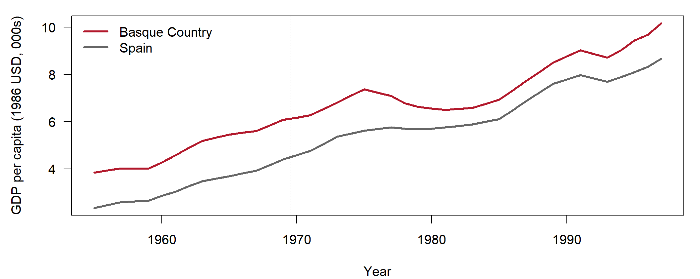
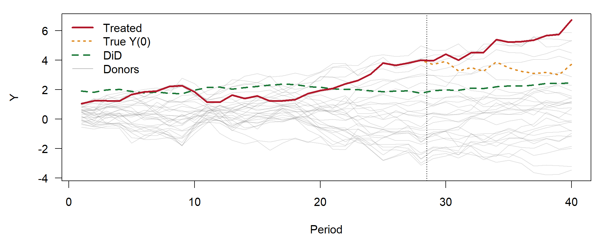
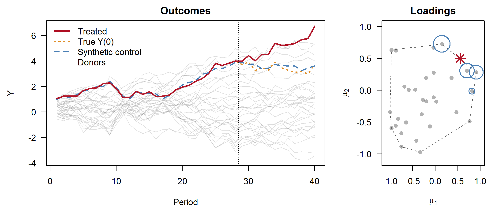
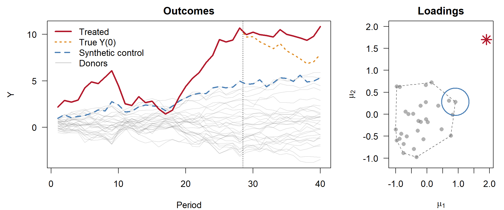
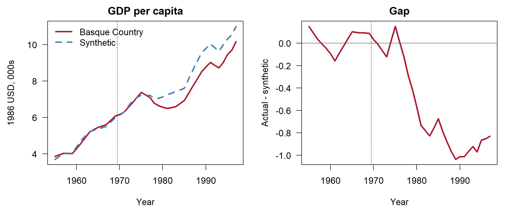
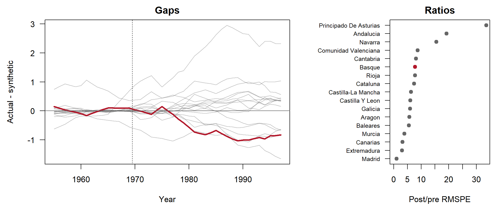
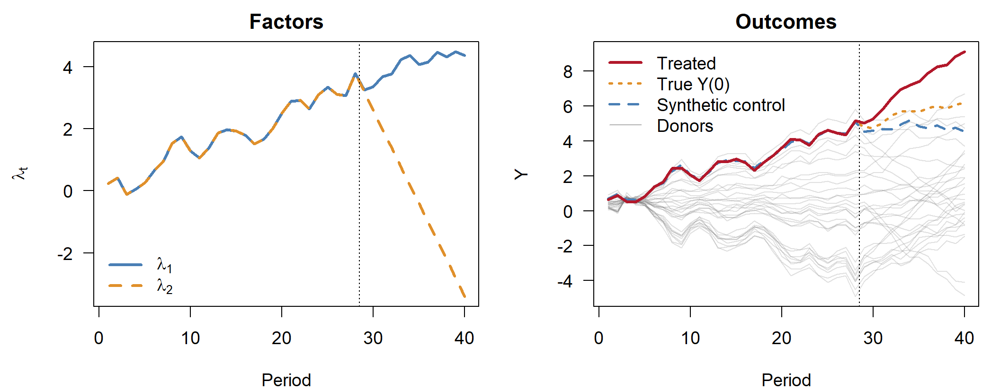
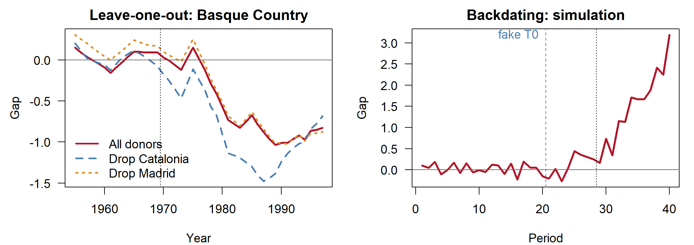
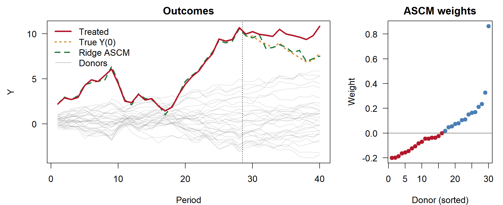

| Region | Weight |
|---|---|
| Cataluna | 0.8508 |
| Madrid | 0.1492 |
One Treated Unit, Then Many
When can a weighted combination of untreated units stand in for the counterfactual?
Today: same imputation, weaker restriction on \(Y(0)\), one treated unit.
Abadie and Gardeazabal (2003): ETA terrorism and Basque GDP. Donors: 16 other Spanish regions.
Abadie, Diamond, and Hainmueller (ADH 2010):
Target, for \(t > T_0\):
\[ \tau_{1t} = Y_{1t} - \underbrace{Y_{1t}(0)}_{\text{unobserved}} \]

1960s GDP per capita: 5.29 vs. 3.63. Different levels, different structure before ETA.
\[ Y_{jt}(0) = \delta_t + \theta_t X_j + \lambda_t \mu_j + \varepsilon_{jt} \]
\(\lambda_t = \lambda\) and \(\theta_t = \theta\): unit FE, parallel trends.
Otherwise units load differently on common shocks. Requires \(T_0 > R\).
\(J = 30\), \(T = 40\), \(T_0 = 28\), \(R = 2\), effect ramps to 3. Treated loadings \((0.55, 0.50)\), not the donor mean.

DiD pre-period RMSE 0.98. ATT 2.87; truth 1.62.
\(w = (w_2, \dots, w_{J+1})\), \(w_j \geq 0\), \(\sum_j w_j = 1\):
\[ \sum_j w_j Y_{jt} = \delta_t + \theta_t \sum_j w_j X_j + \lambda_t \sum_j w_j \mu_j + \sum_j w_j \varepsilon_{jt} \]
Suppose for all \(t \leq T_0\): \(\sum_j w_j Y_{jt} = Y_{1t}\) and \(\sum_j w_j X_j = X_1\).
With exact fit and \(T_0 > R\), for \(t > T_0\):
\[ Y_{1t}(0) - \sum_j w_j Y_{jt} = \sum_j w_j \sum_{s=1}^{T_0} \psi_{st} (\varepsilon_{js} - \varepsilon_{1s}) - \sum_j w_j (\varepsilon_{jt} - \varepsilon_{1t}) \]
\[ \psi_{st} = \lambda_t \Big( \sum_{n=1}^{T_0} \lambda_n' \lambda_n \Big)^{-1} \lambda_s' \]
For \(t > T_0\):
\[ \hat\tau_{1t} = Y_{1t} - \sum_j \hat w_j Y_{jt} \]
Exact balance requires \((Y_{11}, \dots, Y_{1T_0}, X_1)\) in the convex hull of the donors.
Otherwise minimize imbalance.
\(\mathbf{X}_1\), \(\mathbf{X}_0\): predictors, including summaries of pre-period outcomes.
\[ \hat w(V) = \arg\min_{w \in \Delta} (\mathbf{X}_1 - \mathbf{X}_0 w)' V (\mathbf{X}_1 - \mathbf{X}_0 w) \]
\(V\) diagonal, non-negative. Data-driven choices:

Pre-period RMSE 0.17. ATT 1.48; truth 1.62. Circles: \(\hat w_j\), sparse. Star: treated.

Pre-period RMSE 2.74. ATT 4.98; truth 1.62. All weight on 1 donor.
| DiD | Synth | |
|---|---|---|
| \(\hat Y_{1t}(0)\) | \(\hat\alpha + \frac{1}{J} \sum_j Y_{jt}\) | \(\sum_j \hat w_j Y_{jt}\) |
| Weights | uniform | convex, data-driven |
| Intercept | yes | no |
| \(Y(0)\) | parallel trends | interactive FE |
| Beyond donors | extrapolates (level shift) | interpolates (convex hull) |
Simulation, truth 1.62:
| DiD | Synth | |
|---|---|---|
| Inside the hull | 2.87 | 1.48 |
| Outside the hull | 5.09 | 4.98 |
\(j = 1\) treated at \(T_0 = 4\); donors \(j = 2, 3, 4\).
| \(t=1\) | \(t=2\) | \(t=3\) | \(t=4\) | |
|---|---|---|---|---|
| \(Y_{1t}\) | 5 | 7 | 6 | 8 |
| \(Y_{2t}\) | 4 | 6 | 5 | 7 |
| \(Y_{3t}\) | 6 | 8 | 7 | 9 |
| \(Y_{4t}\) | 3 | 5 | 8 | 6 |
Write the SC problem for \(w\) with all pre-period outcomes as predictors, \(V = I\).
If \(Y_{1t} = (2, 2, 2, 2)\), does an exact \(w\) exist?
Compute synth and DiD estimates of \(Y_{1,5}(0)\) when \(Y_{2,5} = 8\), \(Y_{3,5} = 10\), \(Y_{4,5} = 7\). Why do they differ?

Mean post-1969 gap: -0.58, -7.1% of synthetic GDP.
| Region | Weight |
|---|---|
| Cataluna | 0.8508 |
| Madrid | 0.1492 |
Other 14 regions: 0.
| Predictor | Basque | Synthetic | Donor mean |
|---|---|---|---|
| GDP per capita | 5.29 | 5.27 | 3.58 |
| Investment ratio | 24.65 | 21.58 | 21.42 |
| Agriculture | 6.84 | 6.18 | 21.35 |
| Energy and water | 4.11 | 2.76 | 5.31 |
| Industry | 45.08 | 37.64 | 22.42 |
| Construction | 6.15 | 6.95 | 7.28 |
| Marketable services | 33.75 | 41.10 | 36.53 |
| Non-marketable services | 4.07 | 5.37 | 7.11 |
| Population density | 246.89 | 196.28 | 99.41 |
Schooling predictors omitted from the table.
ADH (2010): apply SC to each donor as if treated.
\[ r_j = \frac{\text{RMSPE}_j(T_0 + 1, \dots, T)}{\text{RMSPE}_j(1, \dots, T_0)}, \qquad p = \frac{1}{J+1} \sum_{j=1}^{J+1} \mathbf{1}\{r_j \geq r_1\} \]

\(p =\) 0.35. Minimum possible: \(1/17 \approx\) 0.059. Basque Country stays in each placebo pool, as in ADH.
What is the \(p\)-value about: assignment, or sampling?
Under the sharp null \(\tau_{1t} = 0\): fit on all periods, residuals \(\hat u_t = Y_{1t} - \hat Y_{1t}(0)\).
\[ S_q(\hat u) = \Big( \frac{1}{\sqrt{T - T_0}} \sum_{t > T_0} |\hat u_t|^q \Big)^{1/q} \]
All need the factor model (or similar) for the estimator itself.
| Method | Additional assumption |
|---|---|
| Placebo (ADH 2010) | Exchangeable assignment |
| Conformal (Chernozhukov et al. 2021) | Stationary/exchangeable shocks |
| Prediction intervals (Cattaneo et al. 2021) | Moment conditions on estimation and shock errors |
| Subsampling (Li 2020) | Long panel |
Hollingsworth and Wing (2022): factors collinear before \(T_0\), distinct after. Treated \(\mu = (1, 0)\).

Pre-period RMSE 0.09. Weighted loadings \((0.80, 0.20)\). ATT 2.47; truth 1.62.
Ferman and Pinto (2021). Without exact fit, \(\hat w\) trades off:
Demeaned SC (add an intercept):
Abadie and L’Hour (2021):
Kuosmanen, Zhou, Eskelinen, and Malo (2021): Basque application, three algorithms.
| Synth | MSCMT | Global optimum | |
|---|---|---|---|
| \(w\): Catalonia | 0.851 | 0.633 | 0 |
| \(w\): Madrid | 0.149 | 0.148 | 0.441 |
| \(w\): Baleares | 0 | 0.219 | 0.370 |
| \(w\): La Rioja | 0 | 0 | 0.190 |
| \(v\): GDP per capita | 0.201 | 0.999 | 1 |
| Pre-period \(R^2\) | 0.969 | 0.985 | 0.985 |
Synth numerically unstableAbadie (2021):
Covariates:
Multiple outcomes:

Mean gap: -0.58; drop Catalonia -0.85; drop Madrid -0.54.
Ben-Michael, Feller, and Rothstein (2021). Bias correction, as in matching (L3):
\[ \hat Y_{1T}^{\text{aug}}(0) = \sum_j \hat w_j Y_{jT} + \Big( \hat m_{1T} - \sum_j \hat w_j \hat m_{jT} \Big) \]
\(\hat m\): outcome model on pre-period outcomes. Ridge ASCM:
\[ \hat w_j^{\text{aug}} = \hat w_j + (X_1 - X_0' \hat w)' (X_0' X_0 + \kappa I)^{-1} X_j \]

| Pre-period RMSE | ATT | |
|---|---|---|
| SCM | 2.74 | 4.98 |
| Ridge ASCM | 0.20 | 1.55 |
| Truth | 1.62 |
\[ Y(0) = \begin{pmatrix} Y_{co,pre}(0) & Y_{co,post}(0) \\ Y_{tr,pre}(0) & \textbf{?} \end{pmatrix} \]
\[ \text{ATT} = \frac{1}{N_1} \sum_{it: D_{it} = 1} \big( Y_{it} - \hat Y_{it}(0) \big) \]
Fit on untreated cells, impute ?, average (L9). Methods differ in the model for \(\hat Y_{it}(0)\).
\[ Y_{it}(0) = X_{it}' \beta + \alpha_i + \xi_t + \mu_i' \lambda_t + \varepsilon_{it} \]
Generalized synthetic control:
Same factor structure, \(L\) low rank:
\[ \hat L = \arg\min_L \frac{1}{|\mathcal{O}|} \| P_{\mathcal{O}}(Y - L) \|_F^2 + \kappa \|L\|_* \]
\[ \begin{pmatrix} 1 & ? \\ 4 & 8 \\ 3 & 6 \end{pmatrix} \quad \Rightarrow \quad \begin{pmatrix} 1 & 2 \\ 4 & 8 \\ 3 & 6 \end{pmatrix} = (1, 4, 3)' (1, 2) \]
Athey et al. (2021):
\[ \min \frac{1}{|\mathcal{O}|} \big\| P_{\mathcal{O}}\big( Y - AB' - \alpha 1_T' - 1_N \xi' \big) \big\|_F^2 \]
| Method | Restriction |
|---|---|
| DiD | \(AB' = 0\) |
| Synthetic control | \(A\): non-negative columns summing to 1 |
| Interactive FE | Fixed rank \(R\) |
| Matrix completion | Penalty \(\kappa \| AB' \|_*\) |
Units 3 and 4 treated from \(t = 3\):
\[ Y(0) = \begin{pmatrix} 1 & 2 & 4 \\ 2 & 4 & 8 \\ 3 & 6 & ? \\ 1 & 2 & ? \end{pmatrix} \]
Does \(Y_{it}(0) = \alpha_i + \xi_t\) fit the observed cells?
Does \(Y_{it}(0) = \mu_i \lambda_t\)? If so, impute.
What does this imply for TWFE vs. interactive FE?
Ben-Michael, Feller, and Rothstein (2022). Treated unit \(j\), imbalance \(q_j\):
\[ \min_{\Gamma} \; \nu (\tilde q^{pool})^2 + (1 - \nu)(\tilde q^{sep})^2 + \kappa \|\Gamma\|_F^2 \]
\[ \hat\tau^{sdid} = \arg\min_{\tau, \alpha, \xi, m} \sum_{i, t} (Y_{it} - m - \alpha_i - \xi_t - D_{it} \tau)^2 \, \hat\omega_i \hat\phi_t \]
| \(\alpha_i\) | Unit weights | Time weights | |
|---|---|---|---|
| DiD | yes | uniform | uniform |
| SC | no | \(\hat\omega_i\) | none |
| SDID | yes | \(\hat\omega_i\) | \(\hat\phi_t\) |
| Short \(T_{pre}\) | Long \(T_{pre}\) | |
|---|---|---|
| Many \(N_{co}\) | TWFE imputation | Matrix completion, SDID |
| Few \(N_{co}\) | SDID or TWFE imputation; hard for all | GSC, SCM-based |
fect, gsynth, augsynth, synthdid